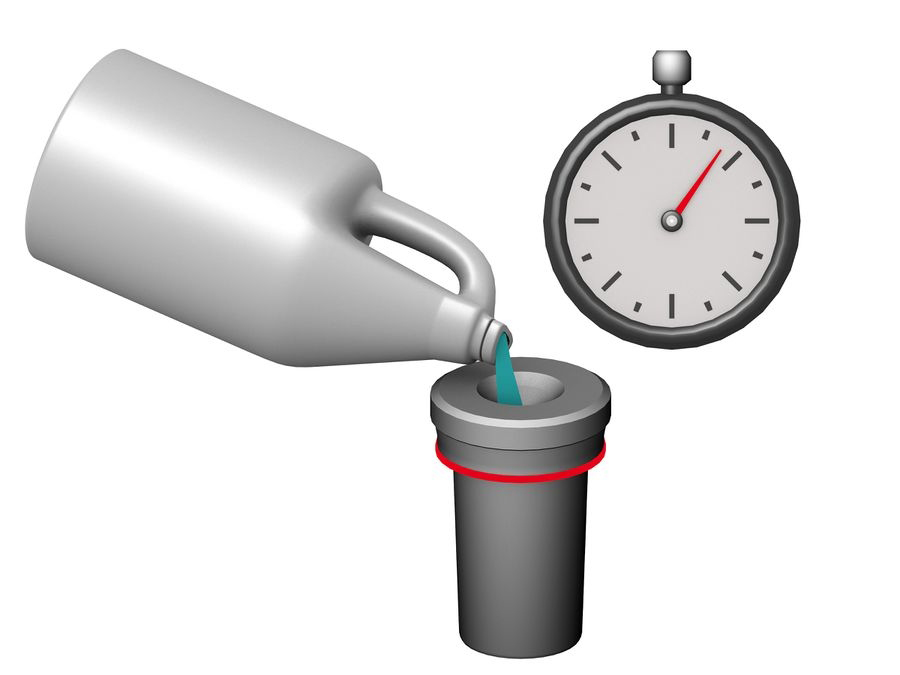
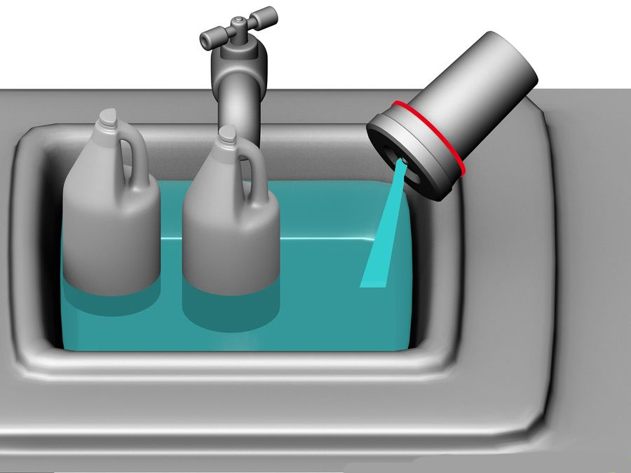

With stopwatch in hand, pour the working developer into the hole in the top of the developing tank.
Do this very quickly and start the stopwatch as soon as you've poured all the developer into the tank. Smack the developing tank on a counter a few times to dislodge any bubbles that might be clinging on to the film. Agitate the tank for 30 seconds. Do this by swirling the tank around. You are going to leave the film in the developer for as many minutes is appropriate for your film type. Agitate the film for 5 seconds every 30 seconds. Agitation is very important. Do not neglect to agitate the developing tank. The developing chemicals become exhausted very shortly after coming in contact with the film. The agitation ensures that fresh chemicals are touching the film. However, this exhaustion of the chemicals is an important part of the process. Over-agitating can give negative results or positive results. It depends on the "look" you are going for. Too much agitation increases the contrast in the image but often you will damage the film and see sprocket marks if you have over agitated. If you want more contrast consider push processing.

When the stopwatch has reached 10 seconds from the end of your time, start pouring the developer out of the top of the tank and into the sink drain. Do not take the lid off the developing tank.
The tank is now light-tight, and you can turn on the lights. Even though the developing tank has a hole in the top for pouring in the chemicals, it is in fact light-tight. Pour water into the tank, let stand for 1 minute, this is called pre-wetting and will make the film swell up and accept the developer solution. Pour out the water.
